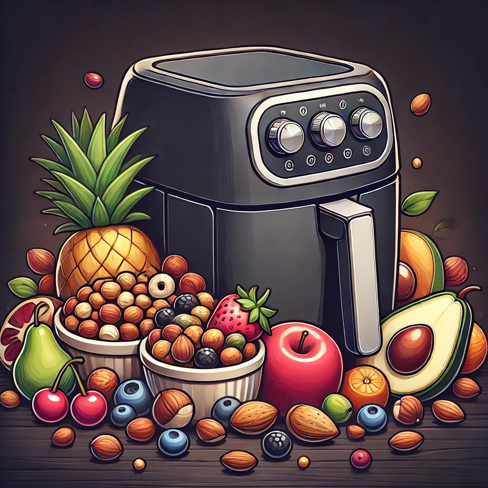

Best Air Fryer for Vegans
Air fryers are a fantastic tool for creating delicious, healthy, and cruelty-free meals. Whether you're roasting vegetables, making crispy tofu, or baking vegan desserts, an air fryer can make the process quick and easy. Here are some of the best air fryers for vegans, chosen for their versatility, capacity, and ease of use.
1. Ninja Foodi 8-Quart 9-in-1 Deluxe XL Pressure Cooker & Air Fryer
Key Features:
- 9-in-1 Functionality: Pressure cook, air fry, steam, slow cook, sear/sauté, bake/roast, broil, dehydrate, and make yogurt.
- TenderCrisp Technology: Combines pressure cooking and air frying for perfect textures.
- Large Capacity: 8-quart pot and a 5-quart Cook & Crisp Plate.
Why It's Great for Vegans:
The Ninja Foodi is incredibly versatile, making it easy to prepare a wide range of vegan dishes, from crispy tofu to hearty stews. Its large capacity is perfect for batch cooking or meal prepping.
2. COSORI Air Fryer Max XL 5.8-Quart
Key Features:
- 5.8-Quart Capacity: Perfect for families or meal prepping.
- 11 Preset Functions: Easily cook a variety of dishes with one touch.
- User-Friendly Interface: Digital touch screen with intuitive controls.
Why It's Great for Vegans:
The COSORI Air Fryer Max XL’s preset functions include options for vegetables, frozen foods, and baking, making it simple to cook a variety of vegan meals. Its large capacity is ideal for preparing multiple servings.
3. Instant Vortex Plus 6-in-1 Air Fryer 6-Quart
Key Features:
- 6-in-1 Functionality: Air fry, broil, roast, dehydrate, bake, and reheat.
- ClearCook Window: Monitor your food without opening the basket.
- EvenCrisp Technology: Ensures perfect crispiness every time.
Why It's Great for Vegans:
The Instant Vortex Plus with its ClearCook window and EvenCrisp technology allows you to achieve consistently crispy vegetables and tofu. The multiple functions provide versatility for various vegan recipes.
4. GoWISE USA GW22956 7-Quart Electric Air Fryer
Key Features:
- 7-Quart Capacity: Suitable for large families or gatherings.
- 8 Preset Functions: Includes a dedicated function for vegetables.
- Rapid Air Technology: Cooks food evenly and quickly.
Why It's Great for Vegans:
The GoWISE USA 7-Quart Air Fryer’s large capacity and preset function for vegetables make it an excellent choice for vegan cooking. Its rapid air technology ensures even cooking for perfect results.
5. Philips Premium Airfryer XXL
Key Features:
- Fat Removal Technology: Reduces and captures excess fat.
- Rapid Air Technology: Ensures even cooking and crispiness.
- Extra Large Capacity: Fits a whole meal for the family.
Why It's Great for Vegans:
The Philips Premium Airfryer XXL’s fat removal technology helps make healthier vegan meals. Its large capacity is perfect for cooking big batches of roasted vegetables or baking vegan desserts.
Conclusion
Choosing the right air fryer can make a big difference in your vegan cooking routine. The models listed above offer excellent features and capacities to ensure your vegan meals are cooked to perfection every time. Whether you're cooking for yourself, your family, or a crowd, these air fryers will help you create delicious and healthy vegan dishes with ease.